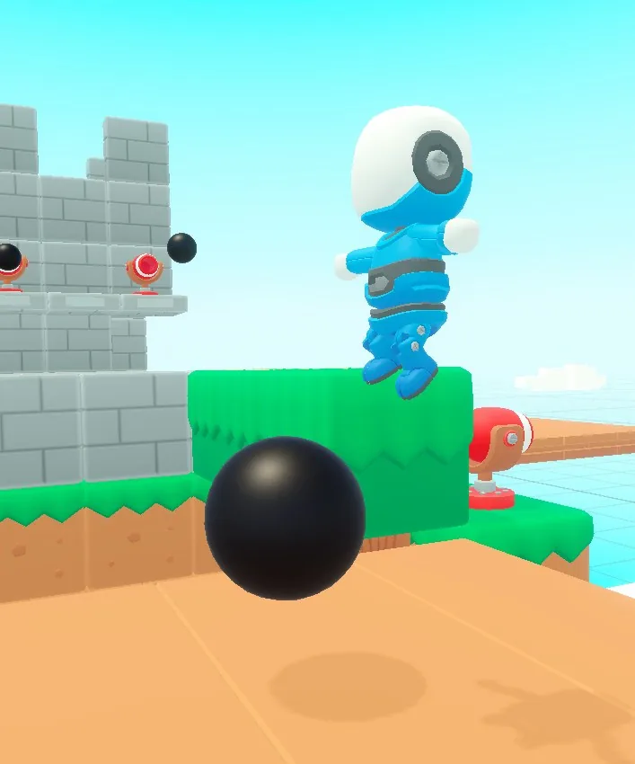
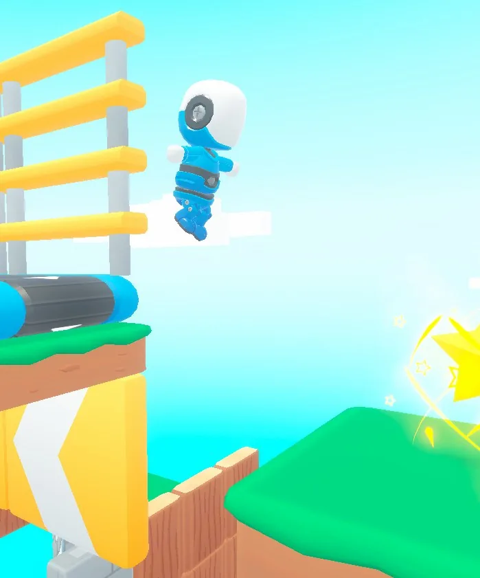
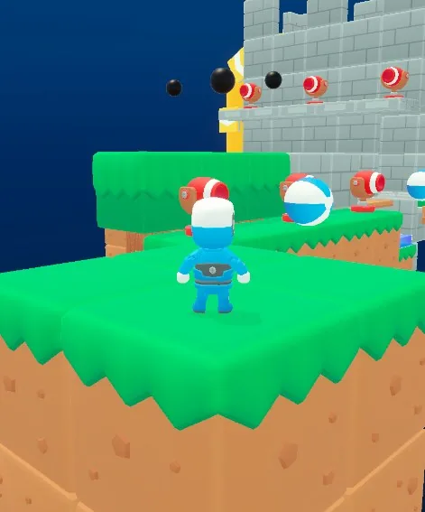

PROJECT JUMPER
3D 플랫포머 · 교내 팀 프로젝트
핵심 재미 · 성취감
재미는 해냈다고 느끼는 순간 가장 크게 다가온다고 보고, 성취감 하나에 집중했습니다. 별 3개를 모두 얻는 것이 목표입니다.
① 장애물 돌파자동 장애물의 패턴을 읽고, 레버나 버튼을 찾아 수동 장애물을 열며 통과 방법을 직접 찾게 했습니다.
② 별 획득별의 위치를 알려 주지 않고, 표지판과 특이 발판을 단서로 직접 찾게 했습니다.
나의 작업
- 조작·점프: 점프를 모든 행동의 기본 조작으로 두고, 점프 높이, 체공 시간, 이동 속도를 직접 조정
- 획득 요소: 별 3개를 탐험의 목표로 두고 배치 설계
- 모션·이펙트·UI: 점프, 착지, 별 획득이 화면에서 바로 읽히도록 모션·이펙트를 직접 제작하고, 별 개수·체력·남은 시간 UI 구성
- 수치와 동작은 프로그래머와 협의하며 플레이로 확인
결과 · 배운 점
지스타 출품을 목표로 플레이 가능한 프로토타입을 완성했습니다.
멀티가 가능하게 된다면 확실히 재미있고 경쟁력이 있을 것 같다지스타 출품 심사 피드백
여러 재미 요소를 구상했던 초기와 달리, 개발 과정에서 핵심 재미를 명확히 정하고 그 재미에 집중하도록 기획을 수정했습니다.


